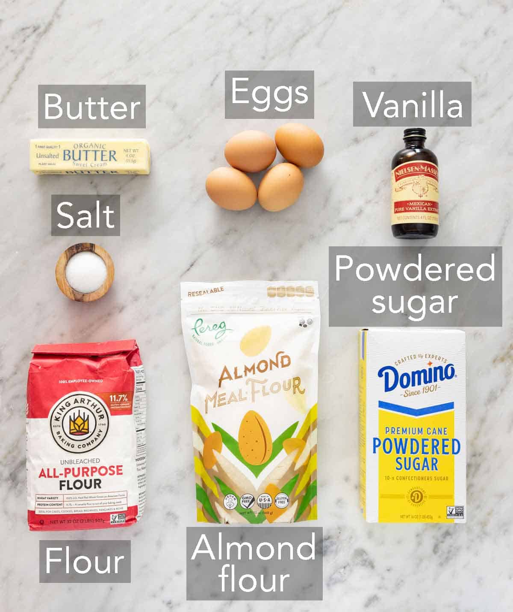

Fantastic French Financiers

Description
French financiers are a a classic bite-sized browned butter almond tea cake
that you often find in a French patisserie.
The exterior is crispy with
a delicate, buttery and nutty interior from browning the butter!
About Financiers
Financiers...[insert history]
Ingredients

- Unsalted Butter (115g)
- Powdered Sugar (150g)
- Almond Flour (125g)
- All-Purpose Flour (45 g)
- Egg-Whites (from 4 large eggs)
- Salt (2g)
- Vanilla Extract (2 tsp)
Steps
- Brown the Butter
Place the butter in a small saucepan. Melt over medium heat. Continue cooking until
butter is boiling
and turns golden brown and smells nutty, about 8 minutes. Pour into a bowl
and cool for 30 minutes.
- Preheat the Oven
Preheat the oven to 350F. Grease the wells of a mini muffin pan by brushing them lightly
with softened butter.
- Mix Ingredients
In a large mixing bowl, whisk together the powdered sugar, almond flour, all-purpose flour,
and salt. Add the egg whites,
vanilla, and cooled browned butter. Whisk together until
just combined. (The batter will be thick.)
- Divide the Batter
Divide the batter among the greased muffin pan cups. Fill about three-quarters to the top.
- Bake
Bake for 15 to 20 minutes or until the edges are golden brown and a toothpick inserted
into the center comes out clean.
Let cool in the pan for 10 minutes. Remove and cool
completely on a wire rack.
- Devour Faithfully your Financiers!!!